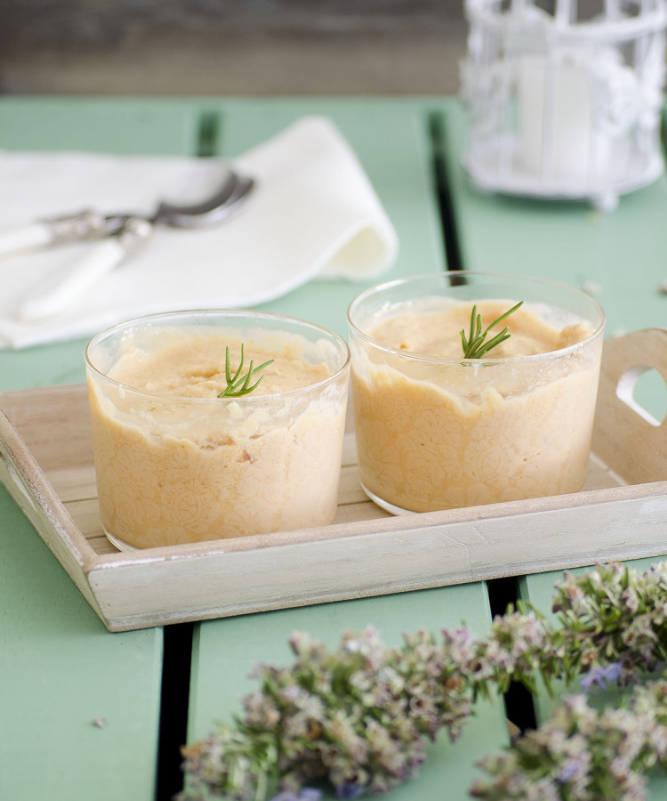
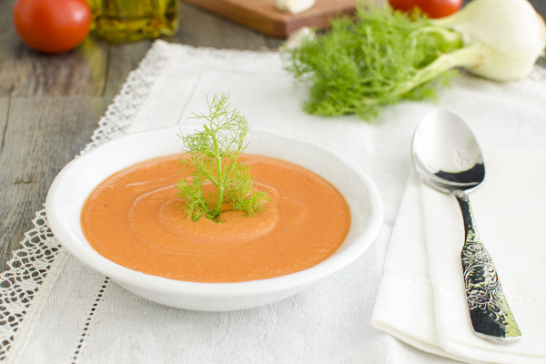
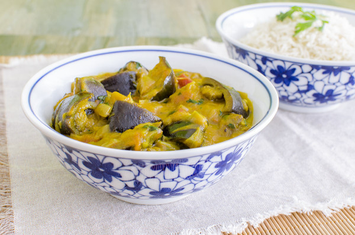
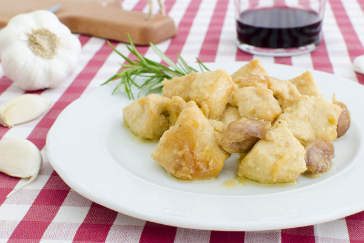
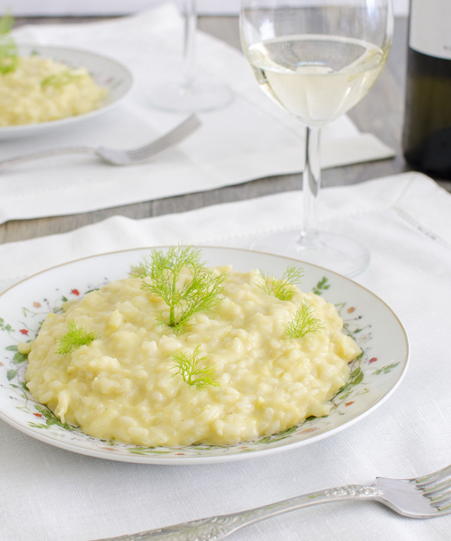
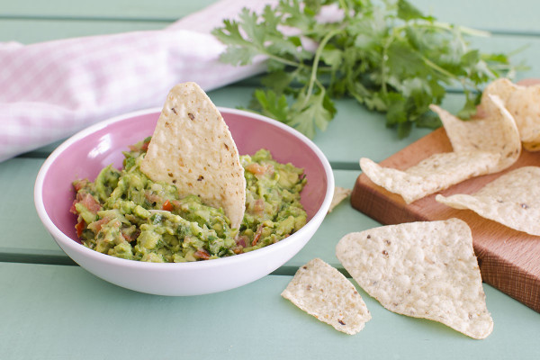
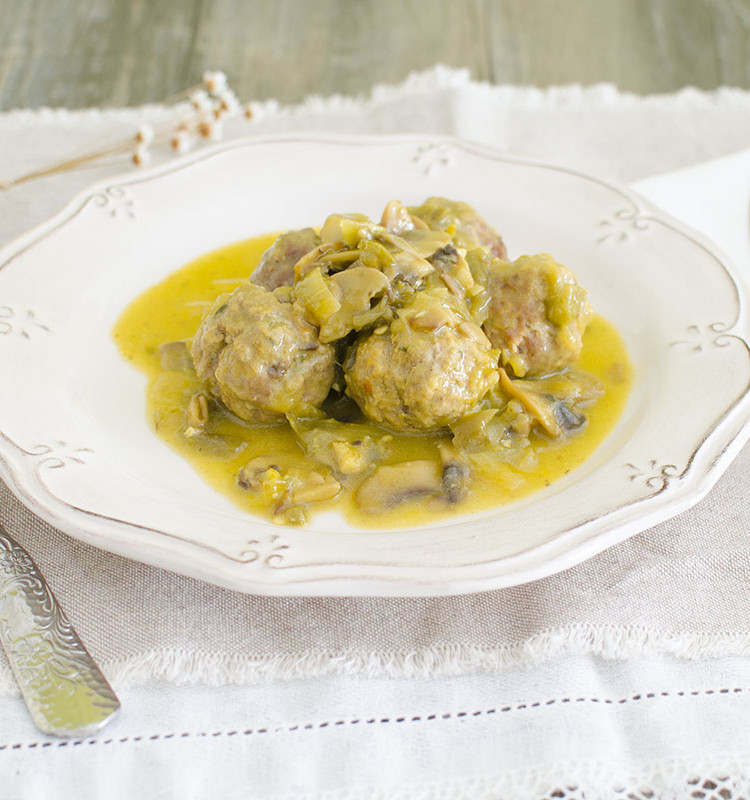
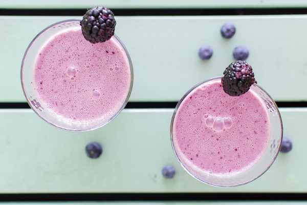
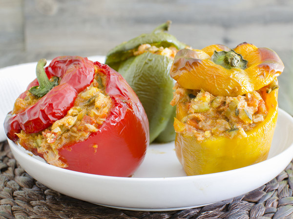

Helado de romero afrutado
Vamos con una receta bien refrescante para empezar el fin de semana: helado de romero afrutado.
En esta receta el protagonista es el romero. Me gustan tanto las hierbas que ¡hasta las pongo en el helado! :-D :-D :-D La verdad es que si no lo habéis probado os animo a experimentarlo, porque el romero combina genial con los sabores dulces y el resultado es delicioso, suave, aromático y muy original.
[Leer receta completa]

Salmorejo al hinojo
¡Llega el calor y se abre la temporada de sopas y cremas frías! La estrenamos con este salmorejo al hinojo , el clásico sabor del salmorejo con el toque diferente del hinojo.
A mí me gustan todas las sopas y cremas frías veraniegas, la vichyssoise, los gazpachos en todas sus variantes (el clásico, de fresas, de sandías…), el ajo blanco, salmorejo… Siempre tenemos alguna en la nevera en cuanto llega el calor.
[Leer receta completa]

Curry de berenjenas
Empezamos esta semana con este curry de berenjenas , una receta vegetariana y #meatfreemonday, que nos encanta y que debemos a Raúl García del blog Contigo en la playa, otro de los blogs que sigo habitualmente, recetas muy ricas, originales, muchas recetas vegetarianas y exóticas que me encantan, y unas fotos fabulosas.
[Leer receta completa]

Pollo al ajillo
El pollo al ajillo es una de esas recetas clásicas que yo creo que se prepara en todas las casas. Se trata de un plato muy sencillo, con pocos ingredientes que seguro vas a tener a mano en la cocina, de elaboración fácil y con un resultado muy rico y sabroso.
[Leer receta completa]

Tarta de ruibarbo
Ya estamos en Junio y la temporada de ruibarbo está a punto de acabarse, así que hemos aprovechado y hemos preparado esta riquísima tarta de ruibarbo. En este post os explicábamos qué es el ruibarbo , dónde comprarlo y cómo conservarlo para poderlo disfrutar fuera de temporada.
[Leer receta completa]
Risotto de hinojo
Una de las cosas que más me gusta y me divierte de la cocina es experimentar. Me encanta intentar combinaciones diferentes, y probar sabores nuevos.El hinojo no es un vegetal muy común, no tiene una gran presencia en nuestra gastronomía, y no es habitual verlo en el mercado, al menos en Madrid.
[Leer receta completa]

Guacamole
El guacamole es una de las salsas más fáciles de preparar que conozco, ¡y de las más ricas! Si nunca lo has preparado en casa te animo a que lo pruebes porque el resultado es notablemente mejor que el guacamole que puede comprarse preparado. Lo tendrás listo para comer en solo un par de minutos , y más sencillo imposible.
[Leer receta completa]

Albóndigas al azafrán
Esta receta de albóndigas al azafrán es un plato que mi madre hacía mucho en casa, y que me apetecía probar a hacer con Mycook. El resultado ha sido más que bueno, así que aquí lo compartimos.
Si todavía no tienes Mycook u otro robot de cocina puedes encontrar más abajo las indicaciones para hacer esta receta de manera tradicional.
[Leer receta completa]

Smoothie de moras, arándanos y avena
Vamos a comenzar la semana con una buena dosis de energía, vitaminas y sabor, con este smoothie de moras, arándanos y avena , ¡y además sin azúcar!Los robots de cocina como Mycook tienen mucha potencia y eso nos permite preparar batidos y smoothies extra-cremosos, muy emulsionados, y con texturas muy suaves en pocos minutos.
[Leer receta completa]

Pimientos rellenos de atún y pisto
Estos pimientos rellenos de atún y pisto son una receta muy sencilla pero muy resultona, con la que tendremos resuelta la cena o el tupper para llevar al trabajo fácilmente.El pisto lo podemos tener preparado con antelación y en el momento de preparar los pimientos sólo tendremos que rellenarlos y asarlos.
[Leer receta completa]
